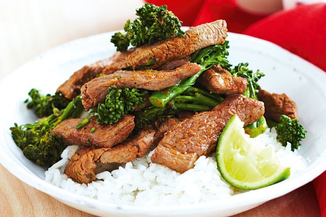

Index Page
Lemon Butter Prawns

Description:
This Thai-flavoured curry is high in iron and low in saturated fat, making it a great week night meal choice.
Ingreidents
- 600g lamb leg steaks, thinly sliced
- 1/4 cup Thai red curry paste
- 1 tbsp peanut oil
- 2 bunches broccolini, chopped
- 1 tbsp fish sauce
- 1 tbsp lime juice
- 4 cups steamed jasmine rice
- Lime wedges, to serve
Steps
- Place lamb in a glass or ceramic bowl. Add curry paste. Toss to coat.
- Heat a wok over high heat. Add 1 teaspoon oil and swirl to coat. Add half the lamb. Stir-fry for 1 minute or until lightly browned. Transfer to a plate. Repeat with 1 teaspoon oil and remaining lamb.
- Heat remaining oil in wok. Add broccolini. Stir-fry for 3 minutes or until tender.
- Return lamb and any juices to wok. Add fish sauce and lime juice. Stir-fry for 1 minute or until heated through. Serve with rice and lime wedges.
- Serve and enjoy!
Find original recipe below:
Red Curry Lamb Stir Fry